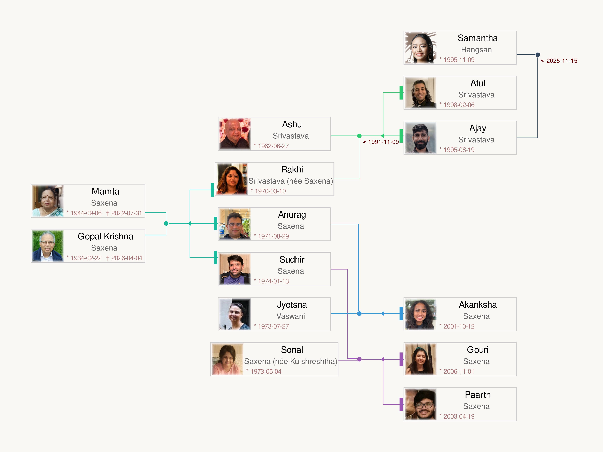

Posters
Click an image to view full size


Family Tree

Photo Albums
View shared photo collections on Google Photos
Bhajans
Click each song to view the English transliteration and translation
Hindi
Transliteration
Translation
भजन बिना चैन न आए
Bhajan bina chain na aaye Ram
Bhajan bina chain na aaye
Without devotional singing, there is no peace, O Ram,
Without bhajan, there is no peace.
बिन भजन के ये जीवन है, जैसे कमल बिना पानी
Tan mein Ram, man mein Ram, Ram bina sab soona
Bin bhajan ke ye jeevan hai, jaise kamal bina paani
Ram in the body, Ram in the mind, without Ram everything is empty.
Life without bhajan is like a lotus without water.
जनम मरण के भवसागर में, बिन भजन डूब जाए
Maya jaal pasaara jag mein, moh ne hai lalchaaya
Janam maran ke bhavsaagar mein, bin bhajan doob jaaye
Maya (illusion) has spread its web in the world, attachment has enticed us.
In the ocean of birth and death, without bhajan one will drown.
एक दिन सबको जाना होगा, सत्य वचन मन में बिठाओ
Sant janon ka kehna maano, Hari charanon mein dhyan lagao
Ek din sabko jaana hoga, satya vachan man mein bithao
Heed the words of the saints, focus your mind on Hari's feet.
One day everyone must depart, engrave this truth in your heart.
Hindi
Transliteration
Translation
जहाँ तुम चले गए
Chitthi na koi sandesh, jaane wo kaun sa desh
Jahan tum chale gaye
No letter, no message, who knows what land that is
where you have gone away.
दिल में रह गई जो बात
ये सोच के हर रात
जिया जलता है
Aankhon mein reh gayi jo baat,
Dil mein reh gayi jo baat
Ye soch ke har raat
Jiya jalta hai
The words that remained unsaid in my eyes,
the feelings that remained in my heart ,
thinking of these every night,
my soul burns.
रात गई फिर दिन भी गुज़ारें
दर पे तेरे ये हारे
खड़े रहते हैं
Beet gayi kitni hi bahaaren
Raat gayi phir din bhi guzaaren
Dar pe tere ye haare
Khade rehte hain
How many springs have passed,
nights go by, then days are endured too.
Defeated, at your doorstep,
I keep standing.
बादल में चाँद छुपे जैसे
ढल जाए उम्र फिर भी
जियेंगे ऐसे
Kaate hain ab ye din aise
Baadal mein chaand chhupe jaise
Dhal jaaye umr phir bhi
Jiyenge aise
I pass these days now
like the moon hidden behind clouds.
Even if a lifetime passes,
I will go on living like this.
जहाँ तुम चले गए
Jaane wo kaun sa desh
Jahan tum chale gaye
Who knows what land that is
where you have gone away.
Sanskrit
Transliteration
Translation
तत्सवितुर्वरेण्यं
भर्गो देवस्य धीमहि
धियो यो नः प्रचोदयात्॥
Om Bhur Bhuvah Svah
Tat Savitur Varenyam
Bhargo Devasya Dhimahi
Dhiyo Yo Nah Prachodayat
Om, the sacred sound, across the earth, atmosphere, and heavens,
we meditate upon the most adorable
radiance of the Divine Creator (Savitri).
May that divine light illuminate and inspire our intellects.
Hindi
Transliteration
Translation
मैली चादर ओढ़ के कैसे द्वार तेरे आऊँ
Maili chadar odh ke kaise dwaar tere aaun
Maili chadar odh ke kaise dwaar tere aaun
Having soiled this sheet, how can I come to Your door?
Having soiled this sheet, how can I come to Your door?
ओढ़ के मैंने मैली करी
काम क्रोध मद लोभ ने धोबिया,
इसने धोबी धोई नहीं
Jab maine chadar li tere naam ki,
Odh ke maine maili kari
Kaam krodh mad lobh ne dhobiya,
Isne dhobi dhoi nahi
When I received the sheet in Your name,
I put it on and made it dirty.
Lust, anger, pride, and greed were the washermen ,
but these washermen never washed it clean.
धूल में मिट्टी में मैली हो गई
बिन साबुन बिन पानी के,
ये चादर धुल न पाई
Dhoop mein chhanv mein maili ho gayi,
Dhool mein mitti mein maili ho gayi
Bin saabun bin paani ke,
Ye chadar dhul na paai
In sunshine and shade it became soiled,
In dust and dirt it became soiled.
Without soap, without water,
this sheet could not be washed clean.
राम नाम रस भर दो
भक्ति प्रेम के साबुन से,
ये चादर धो के आऊँ
Kahat Kabir suno bhai saadho,
Ram naam ras bhar do
Bhakti prem ke saabun se,
Ye chadar dho ke aaun
Says Kabir, listen O holy ones,
fill it with the essence of Ram's name.
With the soap of devotion and love,
let me wash this sheet and come to You.
Hindi
Transliteration
Translation
आ जाते हैं राम कोई बुला के देख ले
Ram naam ati meetha hai koi gaa ke dekh le
Aa jaate hain Ram koi bula ke dekh le
The name of Ram is very sweet, try singing it and see!
Ram comes to you, try calling Him and see!
अहंकार की गठरी, सिर से उतार के देख ले
Andhiyaara hai man ka, deepak jala ke dekh le
Ahankaar ki gathri, sir se utaar ke dekh le
There is darkness in the mind, try lighting a lamp and see.
The bundle of ego on your head, try putting it down and see.
राम नाम के बदले में, कुछ तो बेच के देख ले
Amolak ye maanav tan, kisi se poochh le
Ram naam ke badle mein, kuchh to bech ke dekh le
This human body is priceless, ask someone and find out.
In exchange for Ram's name, try giving something up and see.
प्रेम भक्ति की डोर से, रघुवर बँधे आए थे
Shabari ke joothe ber, Prabhu ne khaaye the
Prem bhakti ki dor se, Raghuvar bandhe aaye the
Shabari's half-eaten berries, the Lord ate with love.
Bound by the thread of loving devotion, Raghuvar (Ram) came to her.
राम भरोसे छोड़ दे, कोई छोड़ के देख ले
Ajaamil Ganika taare, jo sharan mein aaye
Ram bharose chhod de, koi chhod ke dekh le
He redeemed Ajamil and Ganika, those who took His shelter.
Surrender everything trusting in Ram, try letting go and see.
Sanskrit — Om Sahana Vavatu
Transliteration
Translation
सह नौ भुनक्तु ।
सह वीर्यं करवावहै ।
तेजस्विनावधीतमस्तु
मा विद्विषावहै ।
ॐ शान्तिः शान्तिः शान्तिः ॥
Om Saha Naavavatu
Saha Nau Bhunaktu
Saha Viryam Karavaavahai
Tejasvi Naavadhitamastu
Ma Vidvishavahai
Om Shantih Shantih Shantih
Om. May God protect us both together.
May God nourish us both together.
May we work conjointly with great energy.
May our study be brilliant and effective.
May we not quarrel with each other.
Om, peace, peace, peace.
Sanskrit — Om Dyauh Shanti
Transliteration
Translation
पृथिवी शान्तिरापः शान्तिरोषधयः शान्तिः ।
वनस्पतयः शान्तिर्विश्वेदेवाः शान्तिर्ब्रह्म शान्तिः
सर्वं शान्तिः शान्तिरेव शान्तिः
सा मा शान्तिरेधि ।
ॐ शान्तिः शान्तिः शान्तिः ॥
Om Dyauh Shantir Antarikṣam Shantih
Prithivi Shantir Apah Shantir Oshadhayah Shantih
Vanaspatayah Shantir Vishvedevah Shantir Brahma Shantih
Sarvam Shantih Shantireva Shantih
Sa Ma Shantiredhi
Om Shantih Shantih Shantih
Om. May there be peace in heaven and in the atmosphere.
May there be peace on earth, in the waters, and in the herbs.
May there be peace in the trees, among the Gods, and in Brahman.
May there be peace in all. May that peace, real peace, be unto me.
May that peace come to me.
Om, peace, peace, peace.
Hindi
Transliteration
Translation
हे नाथ नारायण वासुदेवा
Shri Krishna Govind Hare Murari
He Nath Narayan Vasudeva
O Lord Sri Krishna, Govind, Hari, Murari,
O Lord Narayan, Vasudeva.
जय देवकी के लाल
जय वसुदेव के लाल
गोपाला, कान्हा, ग्वाला
Jai Yashoda Ke Lal
Jai Devaki Ke Lal
Jai Vasudev Ke Lal
Gopala, Kanha, Gwala
Glory to the beloved son of Yashoda.
Glory to the beloved son of Devaki.
Glory to the beloved son of Vasudeva.
O Gopala, Kanha, cowherd boy.
श्री कृष्ण गोविन्द हरे मुरारी
हे नाथ नारायण वासुदेवा
Pitu Maat Swami Sakha Hamare
Shri Krishna Govind Hare Murari
He Nath Narayan Vasudeva
You are our father, mother, master, and friend.
O Shri Krishna Govind Hare Murari,
O Lord Narayan Vasudeva.
कहीं जन्मे कहीं पाले मुरारी
किसी के जाये किसी के कहाये
है अद्भुत हर बात तिहारी
Bandi Grih Ke Tum Avatari
Kahin Janme Kahin Pale Murari
Kisi Ke Jaaye Kisi Ke Kahaaye
Hai Adbhut Har Baat Tihari
You incarnated in a prison cell.
Born in one place, raised in another, O Murari.
Born to one, called the child of another.
Every aspect of your story is wondrous.
श्री कृष्ण गोविन्द हरे मुरारी
हे नाथ नारायण वासुदेवा
Gokul Mein Chamake Mathura Ke Tare
Shri Krishna Govind Hare Murari
He Nath Narayan Vasudeva
The star of Mathura shone brightly in Gokul.
O Shri Krishna Govind Hare Murari,
O Lord Narayan Vasudeva.
बँट गए दोनों में आधे आधे
राधे कृष्ण, कृष्ण राधे
राधे कृष्ण, कृष्ण राधे
Adhar Pe Banshi Hriday Mein Radhe
Bant Gaye Donon Mein Aadhe Aadhe
Radhe Krishna, Krishna Radhe
Radhe Krishna, Krishna Radhe
With the flute on your lips and Radha in your heart,
you divided yourself equally between both.
Radhe Krishna, Krishna Radhe,
Radhe Krishna, Krishna Radhe.
धर्म युद्ध को धर्म बताया
जीवन कर्मों का फल है भाई
जैसी करनी वैसी भराई
Geeta Mein Updesh Sunaya
Dharm Yuddh Ko Dharm Bataya
Jeevan Karmon Ka Phal Hai Bhai
Jaisi Karni Vaisi Bharai
Through the Gita you delivered your teachings.
You declared righteous war to be dharma.
Life is the fruit of one's deeds, brother;
as you sow, so shall you reap.
त्वमेव बन्धुश्च सखा त्वमेव
त्वमेव विद्या द्रविणं त्वमेव
त्वमेव सर्वं मम देवदेवा
Tvamev Mata Cha Pita Tvamev
Tvamev Bandhush Cha Sakha Tvamev
Tvamev Vidya Dravinam Tvamev
Tvamev Sarvam Mama Dev Deva
You alone are my mother, and you alone are my father.
You alone are my kinsman, and you alone are my friend.
You alone are my knowledge, and you alone are my wealth.
You alone are everything to me, O God of Gods.
हे नाथ नारायण वासुदेवा
हरि बोल, हरि बोल, हरि बोल...
Shri Krishna Govind Hare Murari
He Nath Narayan Vasudeva
Hari Bol, Hari Bol, Hari Bol...
O Shri Krishna Govind Hare Murari,
O Lord Narayan Vasudeva.
Speak the name of Hari! Hari Bol...
Hindi
Transliteration
Translation
जाहि विधि राखे राम ताहि विधि रहिए
Sitaram Sitaram Sitaram kahiye
Jahi vidhi rakhe Ram tahi vidhi rahiye
Say "Sitaram, Sitaram, Sitaram"
In whatever way Ram keeps you, remain content in that way.
तू अकेला नहीं प्यारे, राम तेरे साथ में
Mukh mein ho Ram naam, Ram seva haath mein
Tu akela nahin pyare, Ram tere saath mein
Keep Ram's name on your lips, and Ram's service in your hands.
You are not alone, dear one, Ram is with you.
जग से तू कुछ ना माँगे, हरि कृपा से कुछ नहीं
Kya garibi kya amiri, Ram jo de so sahi
Jag se tu kuchh na mange, Hari kripa se kuchh nahi
What is poverty, what is wealth, whatever Ram gives is right.
Do not ask anything from the world; nothing is without Hari's grace.
हो गई मानव जनम की, व्यर्थ ये सारी बात
Kaam krodh mad lobh mein, phanse rahe kyon din raat
Ho gayi maanav janam ki, vyarth ye saari baat
Why remain trapped in lust, anger, pride, and greed day and night?
This entire precious human birth is being wasted.
कल तक तेरे थे न होंगे, समझ ले तू अकेला है
Dhan joban ka ghamand na kar, ye to chaar din ka mela hai
Kal tak tere the na honge, samajh le tu akela hai
Do not be proud of wealth and youth, this is but a fair of four days.
What was yours yesterday will not remain tomorrow; understand, you are alone.
Garuda Purana
The 16-chapter text traditionally read during the 13-day funeral ceremony